![image, This picture, has a table with three rows, and four Columns , Where as in the, The Letter letter ,A is placed in the first cell, the letter, A is rotated in the clock wise direction, at ninety degree, and one hundred and eighty degree and is placed, in the second a third cell and fourth cell, is filled with question mark In the second row letter, N is placed in the first cell. and again letter N, is rotated in the Clockwise direction, at ninety degree, and one hundred and eighty degree, and is placed in the second, and third cell, where the fourth Cell , is filled with a question mark, In the third row Letter, w is placed, in first Cell, and again letter, w, is rotated in the clock wise direction , at one hundred and eighty degree, and is placed, in the third cell, where the second and fourth cell, are filled with question marks,](images/image287.png)
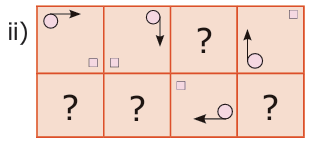
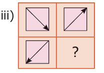
To perceive iterative processes and patterns
To see Euclid’s game as an iterative process.
To learn to devise and follow algorithms.
To learn the advantage of ordering information.
Everyday morning, waking up, brushing teeth, doing physical exercise, drinking milk, having bath, having breakfast and then getting ready to school are some of the activities we do.
Everyday such activities happen. Don't they?
Do we see a pattern getting repeated? In our life, there are many such repeating patterns. In fact, EAT STUDY, PLAY, SLEEP, is a pattern repeated daily, isn’t it?
When we go on doing same activities again and again, it gives rise to a new form.
Let us see some more examples for repeated processes.
We can see that some patterns are getting repeated in kolams, so as to get larger kolams
In the construction of a wall, a mason places the bricks one upon another and adds plaster to them in an organized manner repeatedly. After some days we can see that a nice wall is getting constructed.
Bees make hives which are formed by the increasing pattern of hexagons where they can store optimum amount of honey and feed themselves during winter.
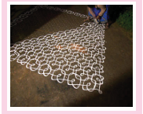
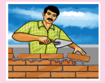
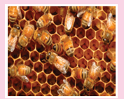
Take a bottle of red paint, add a little bit of green paint to it. The change in colour cannot be seen immediately. Add a little more, now, you can see a slight change in the colour. A little more , Hey don’t you see a different colour now? You add green paint drop by drop to red paint, you finally get a new colour. The activities explained above follow iterative processes.
Hence, an iterative process is a procedure that is repeated many times which gives rise to a new form.
MATHEMATICS ALIVE – INFORMATION PROCESSING IN REAL LIFE |
|
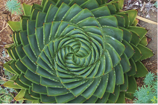 Fibonacci sequence in nature |
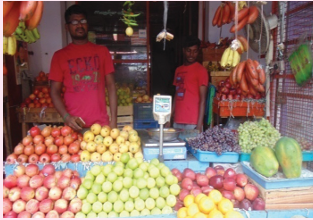
Orderly arrangement of fruits in the shop |
Orderly arrangement of fruits in the shop
The above iterative processes can be seen in our daily life. It can be seen in number sequences also. The numbers may increase or decrease following a pattern.
1) Observe the following sequences and the pattern that generates each one of them.
The sequence 1, 3, 5, 7, is generated by the pattern 1, 1 plus 2, 3 plus 2, 5 plus 2.
The sequence 50, 48, 46, 44, is generated by the pattern 50, 50 minus 2, 48 minus 2, 46 minus 2.
The sequence 2, 4, 6, is generated by the pattern one into 2, 2 into 2 ; 3 into 2,
The sequence 1, 4, 9, 16 is generated by the pattern 1 into 1, 2 into 2 , 3 into 3.
The sequence 2, 6, 12, 20, 30, is generated by the pattern 1 into 2, 2 into 3, 3 into 4, 4 into 5,
The sequence 2, 4, 8,16, is generated by the pattern 2 into 1, 2 into 2, 2 into 2 into 2.
2) Observe the pattern, 1, 10, hundred, When the number of zeros increase the value also increases.
3) In the same way, can you guess the next number in the special number sequence given below
1, 1, 2, 3, 5, 8, 13, 21, 34, desh
Yes it is 55, how? You have got it by adding 21 and 34. Haven’t you? Are you able to recognize the pattern in the above sequence? Yes, if we add the previous two consecutive terms, we get the next term as
1 plus 1 is equal to 2, 1 plus 2 is equal to 3, 2 plus 3, is equal to, 5, 3 plus 5, is equal to, 8, 5 plus 8 is equal to 13,
This special pattern of numbers is called the Fibonacci sequence. Each term in the Fibonacci sequence is called, a, Fibonacci number
4) Lucas numbers form a sequence of numbers like the Fibonacci numbers and they are closely related to the Fibonacci numbers. Instead of starting with 1 and 1, Lucas numbers start with 1 and 3. The Lucas sequence is 1, 3, 4, 7, 11, 18, 29, 47, 76, hundred and twenty three, In all the above patterns of numbers, we can see the iterative processes.
Try these
1) Find the tenth term of the Fibonacci sequence.
2) If the elventh term of the Fibonacci sequence is 89 and thirteenth term is two hundred and thirty three, then, what is the 12th term?
Fibonacci numbers in nature,
We come across the existence of Fibonacci sequence in many natural phenomena like spiral in a shell, arrangement of petals in flowers, branches of a tree, seeds in the head of a sunflower, petals on a daisy, the cells in the bee hive, etcetera. Mathematical patterns are found in the distinct marking on animals and the structure of seashells also.
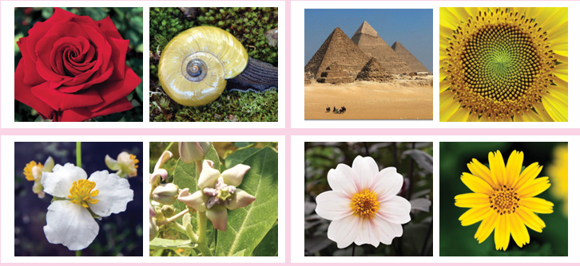
Note
We can also begin the Fibonacci sequence with zero and 1, instead of 1 and 1.
Golden Ratio: Consider the ratio of successive Fibonacci
numbers 3 divided by 2 is equal to one point five,
5 divided by 3 is equal to 1 point six six ,
8 divided by 5 is equal to 1 point 6
13 divided by 8 is equal to 1 point six, two, five, ,
21 divided by 13 is equal to 1 point six,one, five, three,
you can see the pattern, getting closer to 1 point , six, one, eight, and that is denoted by pi called the Golden Ratio open bracket, pi is equal to 1 point six, one, eight,close bracket. It is observed that shapes having Golden Ratio appear beautiful.
Think
Are two consecutive Fibonacci numbers relatively prime.
The Portrait of Mona Lisa has Fibonacci spiral pattern. This is one of the reasons for the enhanced beauty of Mona Lisa.
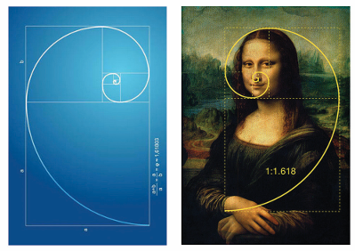
Ammu and Balu are playing a game. Each one can choose any number and they write it down on a piece of paper. If Ammu picks up the number greater than what Balu picked up, then Ammu will find the difference of the two numbers. That difference will be shown to Balu. Now Balu takes the chance to find the difference between the number what he has and the number shown to him by Ammu. They will continue the process until the difference and the numbers they have become equal. Finally, the person who gets the number equal to the difference wins the game Let us see how it works.
Ammu |
(34,19) |
34 minus 19 is equal to 15. |
Balu |
(19,15) |
19 minus 15 is equal to 4. |
Ammu |
(15, 4) |
15 minus 4 is equal to 11. |
Balu |
(11, 4) |
11 minus 4 is equal to 7 |
Ammu |
(7, 4) |
7 minus 4 is equal to 3. |
Balu |
(4, 3) |
4 minus 3 is equal to 1. |
Ammu |
(3, 1) |
3 minus 1 is equal to 2 |
Balu |
(2, 1) |
2 minus 1 is equal to 1. |
Ammu |
(1, 1) |
same numbers |
Suppose Ammu picked the number 34 and Balu picked the number 19. Ammu first finds the difference between 34 and 19 which gives 15. She shows the difference to Balu. Now Balu has 19 and she has 15, the difference is 4. He shows to Ammu and so on. (the bigger number should be kept first to find the difference). So Ammu wins.
Now suppose they start with Ammu (24, 18)
It goes, open bracket, 24, 18, close bracket, right arrow, Ammu open bracket, 18, 6, close bracket, right arrow, Balu open bracket, 12, 6 close bracket, right arrow, Ammu open bracket, 6, 6 close bracket, If they start with Ammu open bracket, 18, 6 close bracket, we get open bracket, 18, 6 close bracket, right arrow, Ammu wins again open bracket, 12, 6 close bracket, right arrow, open bracket, 6, 6 close bracket, Balu wins,
Play the game with your friends and see for which pairs of numbers the first player open bracket Ammu close bracket, wins, and when the second player wins.
Now we can notice something interesting! Begin with any pair of numbers. Can you say anything about the pair of numbers. Remember that we stop the process when both the numbers are same. It is the Highest Common Factor (HCF) of the two numbers we started with. So what we have seen here is an iterative process which leads us to the HCF of two given numbers. The HCF of a and b open bracket here a greater than b close bracket, is the same as, for a, and a, minus b.
Example 1
Find the HCF of two numbers Sixteen and eighteen
Solution
Now the HCF of Sixteen, twenty eight, Now the HCF of open bracket 16, 28 minus 16 close bracket,
16 is equal to 2 into 2 into 2 into 2
28 is equal to 2 into 2 into 7
HCF of (16, 28) is equalto, 2 into 2 is equal to 4
16 is equal to 2 into 2 into 2 into 2
12 is equal to 2 into 2 into 3
HCF of (16, 12) is equalto, 2 into 2 is equal to 4
Therefore HCF of (16, 28) is equalto, HCF of (16, 28 minus 16). Hence, HCF of two numbers a and b, a greater than b, is same as the HCF of a, and a, minus b.
Euclidean algorithm
Let us take a number 12.
If we divide 12 by 7 then, we get quotient is equal to 1, remainder is equal to 5 and 12 can be written as 12 is equal to open bracket of 1 into 7, close bracket, plus 5.
If we divide 12 by 2 then, we get quotient is equal to 6, remainder is equal to zero, and 12 can be written as 12 is equal to open bracket of 2 into 6 close bracket, plus zero.
From this, we observe that, if a number a, is divided by some number b, then we get the quotient q, and remainder r, and ‘a’ can be written in a unique way as a is equal to open bracket of b, into q, plus r.
That is, Dividend is equal to, open bracket of, Divisor into Quotient close bracket, plus Remainder. This is called the Euclidean algorithm.
Do you know the robot game? One child acts as a robot. Another child gives instructions to the child enacting as robot. The robot child should follow instructions. If the robot child stands at the wall by facing it, the instructor has to say, move forward. The robot child can only try to move forward, but can not The robot child cannot say it is not possible. This humorous activity shows that instructions are mechanically followed by robots. Unlike robots, human brain is capable of thinking and modifying algorithms based on situations
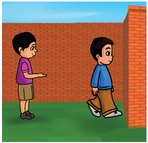
Think about the situation
Recipe for preparing lemonade for a group of 6 members.
Squeeze 3 half lemons in a bowl.
Add 5 glasses of normal water into the bowl.
Add 4 teaspoons of sugar into the lemon juice.
Stir the content well.
Filter the content.
Pour the filtered content into 6 glasses and serve.
Using the above instructions, prepare lemonade for 12 members, 24 members and 3 members.
Example 2
Follow the instructions in the given puzzle to arrive at the same number (36). Instructions
Think of a number from 1 to 9.
Multiply it by 9.
If you have two digit number, add the digits together.
Subtract 3 from the answer.
Multiply the number by itself.
Solution
Let us take a number, 6
Multiply it by 9, 9 into 6 is equal to 54
Add the digits together, 5 plus 4 is equal to 9
Subtract 3 from the answer, 9 minus 3 is equal to 6
Multiply the number by itself, 6 into 6 is equal to 36
Try for number other than 6.
Example 3
Solution
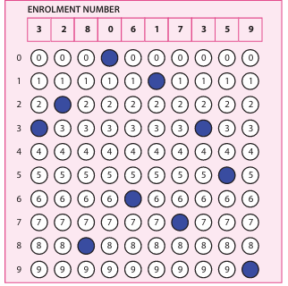
You need to read the instructions carefully before filling the OMR sheet. The given OMR sheet is shaded based on the following instructions.
Instructions
Observe the enrolment number written on the top row.
The digits are to be shaded from left to right.
Shade the corresponding bubbles under each of the number boxes.
Only one digit is to be shaded in each column.
Use only ball point pen for shading the bubbles.
This activity is very important as children need to fill OMR for various examinations like NAS, N M M S.
Example 4
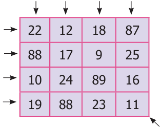
Observe the given 4 into 4 square grid and follow the instructions given below to appreciate the uniqueness of the arrangement of numbers that gives the total, hundred and thirty nine,.
Instructions
Add the numbers horizontally.
Add the numbers vertically.
Add the numbers diagonally.
Add the numbers in the four corners of the square
Divide the square into four 2 into 2 squares and add all the numbers in each of the squares.
Each of the above instructions gives the same answer. Doesn’t it? In all the above examples, we note that delivering instructions as well as following them are interesting
Try these
1) The teacher should give oral instructions to the students to draw the geometrical figure already drawn by him slash, her.
1) Draw a square. In the middle of the square, draw a circle in such a way that the circle does not touch any side of the square. Divide the circle into four equal parts. Shade the bottom right part of the circle. Ask the students to show that figure drawn by them.
2) Draw a triangle on a piece of paper. Make it crazy looking by adding some features. Give instructions to your friend to draw it exactly the same.
3) Suppose your friend wants to come to your house from his slash, her house. Give clear instructions in order, to reach your house.
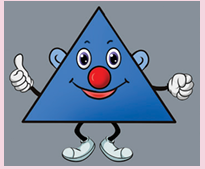
In day to day life, sorting things such as arranging books on shelves, lining up foot wears in racks, segregating vegetables in trays, keeping household things in an almirah, arranging provisions in a cupboard, listing out expenditure etcetera, become inevitable. These activities help us to recall the things available, to have an easy access, avoid wastage and so on. Similar kind of arrangements are available in numbers also.
Example Calendar
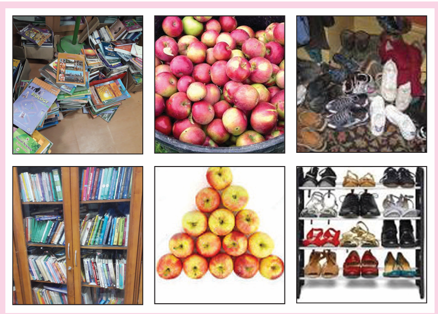
Discuss the following situations in groups
Situation 1
Suppose you need to arrange hundred books of same size in a shelf. The shelf has 10 rows and each row can accommodate 10 books. Besides, each book has an ID number written on it. How will you arrange the books based on their ID numbers, the smallest number should be on the left top row and the greatest ID number must on the right bottom row.
Discuss the following questions
1) Are there different ways to arrange the books?
2) How do you know that one method is better than the other?
3) If two persons together do the arrangement, how will you divide the work between them?
4) If the books do not have any numbers written on them, how will you arrange them?
5) Is arranging them by number better than arranging them by size? why?
Situation 2
Suppose you have saved some coins in your piggy bank. If you want to know the amount saved, what can you do?
1) What are the ways to count the amount?
2) Which is the easy way to count?
3) Can the coins be arranged by their value?
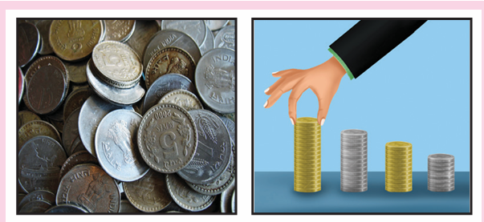
Situation 3
Have you seen the garbage being sorted out in the streets? Some materials are bio degradable and some are not bio degradable like hospital wastes, plastics, glass materials and other wastes. How are the garbages sorted?
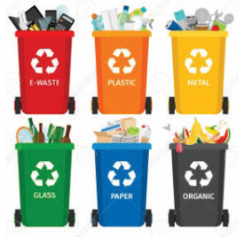
Note
The teacher may discuss this with students to create more awareness on segregating of waste, at the source.
Example 5
Observe the calendar showing the month of January two thousand nineteen.
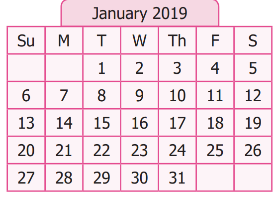
Answer the following questions
1) Sort out the prime and composite numbers from the calendar.
2) Sort out the odd and even numbers.
3) Sort out the multiples of 6; multiples of 4; the common multiples of 4 and 6 and LCM of 4 and 6.
4) Sort out the dates which fall on Monday
Solution
1) Prime numbers is equal to, 2, 3, 5, 7, 11, 13, 17, 19, 23, 29, 31
2) Composite numbers is equal to, 4, 6, 8, 9, 10, 12, 14, 15, 16, 18, 21, 22, 24, 25, 26, 27, 28, 30
3) Odd numbers is equal to, 1, 3, 5, 7, 9, 11, 13, 15, 17, 19, 21, 23, 25, 27, 29, 31
Even numbers is equal to, 2, 4, 6, 8, 10, 12, 14, 16, 18, 20, 22, 24, 26, 28
3) Multiplies of 6 is equal to, 6, 12, 18, 24, 30
Multiplies of 4, is equal to, 4, 8, 12, 16, 20, 24, 28
Common multiples is equal to, 12, 24
LCM is equal to, 12
4) Monday falls on , is equal to, 7,14,21,28
Information Processing
Expected Outcome
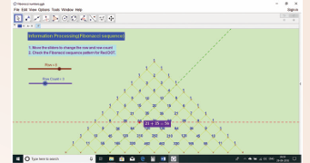
Step 1
Open the Browser by typing the URL Link given below (or) Scan the QR Code. GeoGebra work sheet named Information Processing” will open. There is a worksheet under the title Fibonacci Sequence.
Step 2
Move the sliders to move Red point vertically and horizontally along the numbers and check how Fibonacci sequence is formed.
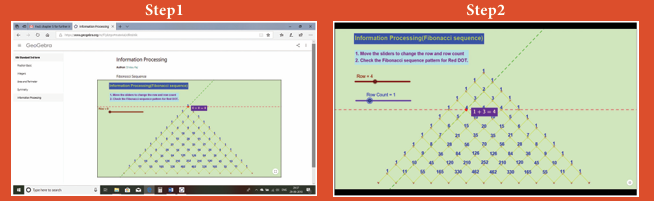
Browse in the link
Information Processing: https://ggbm.at/dfktdr6k or Scan the QR Code.
1) Study and complete the following pattern
1) 1 into 1 is equal to 1
11 into 11 is equal to 121
One hundred and eleven, into One hundred and eleven, is equal to, twelve thousand three hundred and twenty one,
One thousand, hundred and eleven, into thousand, One hundred and eleven is equal to ?
Eleven thousand, hundred and eleven, into, Eleven thousand, hundred and eleven, is equal to ?
2)
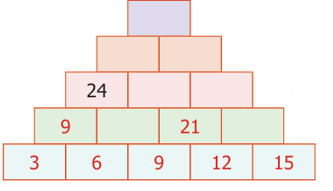
(Hint: 3 plus 6 is equal to 9, 9 plus 12 is equal to 21)
2) Find next three numbers in the following number patterns.
1) 50, 51, 53, 56, 60, desh
2) 77, 69, 61, 53, desh
3) 10, 20, 40, 80, desh
4) 21 divided by 33, three hundred and twenty one, divided by four hundred and forty four, four thousand three hundred and twenty one, divided by five thousand five hundred and fifty five, desh
3) Consider the Fibonacci sequence 1, 1, 2, 3, 5, 8,13, 21, 34, 55, Observe and complete the following table by understanding, the number pattern followed. After filling the table discuss the pattern followed in addition and subtraction of the numbers of the sequence,
Steps |
Pattern 1 |
Pattern 2 |
Steps , 1) |
Pattern 1, 1 plus 3 is equal to 4 |
Pattern 2, 5 minus1 is equal to 4 |
Steps , 2) |
Pattern 1, 1 plus 3 plus 8 is equal to desh |
Pattern 2, Question Mark |
Steps , 3) |
Pattern 1, 1 plus 3 plus 8 plus 21 is equal to desh |
Pattern 2, Question Mark |
Steps , 4) |
Pattern 1, Question Mark |
Pattern 2, Question Mark |
4) Complete the following patterns.
|
 |
 |
5) Find HCF of the following pair of numbers by Euclid’s game.
1) 25 and 35
2) 36 and 12
3) 15 and 29
6) Find HCF of 48 and 28. Also find the HCF of 48 and the number obtained by finding their difference.
7) Give instructions to fill in a bank withdrawal form issued in a bank.
8) Arrange the name of your classmates alphabetically.
9) Follow and execute the instructions given below.
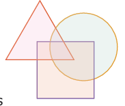
1) Write the number 10 in the place common to the three figures
2) Write the number 5 in the place common for square and circle only.
3) Write the number 7 in the place common for triangle and circle only.
4) Write the number 2 in the place common for triangle and square only.
5) Write the numbers 12, 14 and 8 only in square, circle and triangle respectively.
10) Fill in the following information
Candidate’s EMIS Number
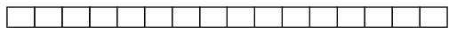
1) Name of the candidate in Capital Letters followed by initial leaving one box blank. (Do not write Miss/Master)
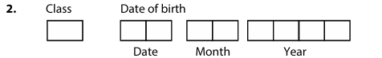
3) Father’s name in Capital Letters followed by initial leaving one box blank. (Do not write Mr./Dr./Prof)
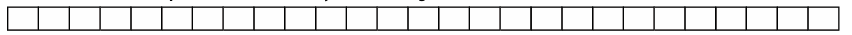
4) Mother’s Name in Capital Letters followed by initial leaving one box blank. (Do not write Mrs./Dr./Prof)
5) Sex (Put mark)
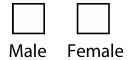
6) Area to which candidates resides. (Put mark)
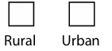
11) The next term in the sequence 15, 17, 20, 22, 25, is
a) 28
b) 29
c) 27
d) 26
12) What will be the 25th letter in the pattern? A B C A A B B C C A A A B B B C C C,
a) B
b) C
c) D
d) A
13) The difference between 6th term and 5th term in the Fibonacci sequence is
a) 6
b) 8
c) 5
d) 3
14) The 11th term in the Lucas sequence 1, 3, 4, 7, is
a) 199
b) 76
c) 123
d) 47
15) If the HCF of 26 and 54 is 2, then HCF of 54 and 28 is.
a) 26
b) 2
c) 54
d) 1
Exercise 5 point 2
Miscellaneous Practice problems
1) Find HCF of hundred and eighty eight and two hundred and thirty, by Euclid's game.
2) Write the numbers from 1 to 50. From that find the following.
1) The numbers which are neither divisible by 2 nor 7.
2) The prime numbers between 25 and 40.
3) All square numbers upto 50.
3) Complete the following pattern,
1) 1 plus 2 plus 3 plus 4 is equal to 10
2 plus 3 plus 4 plus 5 equal 14
dash plus 4 plus 5 plus 6 is equal to dash
4 plus 5 plus 6 plus dash is equal to dash
2) 1 plus 3 plus 5 plus 7 is equal to 16
dash plus 5 plus 7 plus 9 is equal to 24
5 plus 7 plus 9 plus dash is equal to dash
7 plus 9 plus dash plus 13 is equal to dash
3) A,B, D,E,F, H,I,J, K, dash S,T,U,V,W,X,
4) 20, 19, 17, dash 10, 5
4) Complete the table by using the following instructions.
A It is the 6th term in the Fibonacci sequence.
B The predecessor of 2.
C LCM of 2 and 3.
D HCF of 6 and 20
E The reciprocal of 1 divided by 5 .
F The opposite number of minus 7.
G The first composite number.
H Area of a square of side 3 centi meter,
I The number of lines of symmetry of an equilateral triangle.
After completing the table, what do you observe? Discuss.
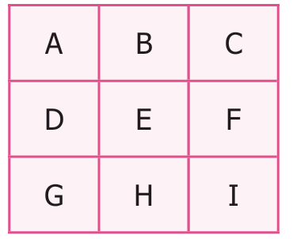
5) Assign the number for English alphabets as 1 for A, 2 for B up to 26 for Z.
Find the meaning of
7 |
15 |
15 |
4 |
13 |
15 |
18 |
14 |
9 |
14 |
7 |
6) Replace the letter by symbols as plus for A, minus for B, into for C and divided for D. Find the answer for the pattern 4B3C5A30D2 by doing the given operations.
7) Observe the pattern and find the word by hiding the numbers
1,H, 2, O, 3, W,
4, A, 5, R, 6, E,
7, Y, 8, O, 9, U,?
8) Arrange the following from the eldest to the youngest. What do you get?
A refers to parents
L refers to you
F refers to grandparents
I refers to elder sister
Y refers to younger brother
M refers to uncle
Challenge problems
9) Prepare a daily time schedule for evening study at home.
10) Observe the geometrical pattern and answer the following questions

1) Write down the number of sticks used in each of the iterative pattern.
2) Draw the next figure in the pattern also find the total number sticks used in it.
11) Find HCF of twenty eight, thirty five, fourty two, by Euclids game.
12) Follow the given instructions to fill your name in the OMR sheet.
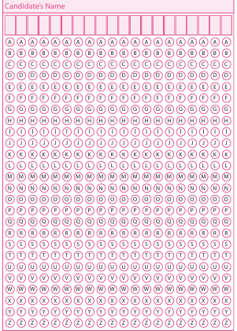
The name should be written in capital letters from left to right.
One alphabet is to be entered in each box.
If any empty boxes are there at the end they should be left blank.
Ball point pen is to be used for shading the bubbles for the corresponding alphabets.
13) Consider the Postal Index Number (PIN) written on the letters as follows:
6, zero,4,5,0,6; 6, zero,4,5,1,6, 6, zero,4,5,6,0, 6, zero,4,5,0,6, 6, zero,4,5,1,6, 6, zero,4,5,1,6, 6, zero,4,5,6,0, 6, zero,5,1,6, 6, zero,4,5,0,5, 6, zero,4,4,7,0, 6, zero,4,5,1,5, 6, zero,4,5,2,0, 6, zero,4,3, zero,3, 6, zero,4,5, zero,9, 6, zero,4,4,7,0, . How the letters can be sorted as per Postal Index Numbers?
An Iterative process is a procedure that is repeated many times to give new results.
The Fibonacci sequence is 1, 1, 2, 3, 5, 8, 13, 21, 34,
If a number a, is divided by some number b, then we get the quotient q, and remainder r, and ‘a’ can be written in a unique way as a is equal to, open bracket of b, into q, close bracket, plus r. that is, Dividend is equal to open bracket of Divisor into, Quotient close bracket, plus Remainder. This is called the Euclidean algorithm.
Chapter 1 Fractions
Exercise 1.1
1) 14, 1 divided by four 2) Mixed Fraction, 3) 2, 1 divided by 6, 4) 16, 5) 1
2) 1) True, 2) False , 3) True , 4) True , 5) False
3) 1) 10 divided by 21, 2) 7, 1 divided by 2, 3) 7, 6 divided by 35 , 4) 38 divided by 63
5) 11 divided by 15, 6) 4, 2, divided by 21.
4) 1) 61 divided by 18, 2) 14 ,1 divided by 7, 3) 7, 5 divided by 6, 4) 109 divided by 9,
5) 1) 4, 2) 41, 2 divided by 3, 3) 3 divided by 10 , 4) 4
6) 1) 3 divided by 28, 2) 2, 2 divided by 5, 3) 1, 3 divided by 25, 4) 5, 4 divided by 5
7) 5 1 divided by 2 kilo gram, 8) 1, 1 divided by 4, litre, 9) 15, 3 divided by 4 kilo meter, 10) 7
11) d) 10 divided by grater then 9 divided by 10,
12) a) 13 divided by 63,
13) c) 17 divided by 53
14) a) 42
15)
c) 4 divided by 5, of rupees hundred and fifty,
Exercise 1.2
1) Rupees 510, 2) 3, 1 divided by 4 kilometer, 3) The difference between 2, 1 divided by 2, and 3, 2 divided by 3 is smaller
4) 10, 1 divided by 8, kilo gram,
5) 22 steps, 6) 4 divided by 8, and many answers, 7) 3, 2 divided by 3, 8) 6, 8 divided by 35, 9) 2 7 divided by 12, 10) 3, 11) 1 divided by 20, 1 divided by 30, 1 divided by 20 , 12) 1 divided by 8, 13) 15,
14. 1) 4, 1 divided by 4 kilo meter, 2) 5, 3 divided by 4 kilo meter, 3) Via Bus Stand 4) 6 times,
Chapter 2 Integers
Exercise 2.1
1) 1) minus 100, 2) minus 7, 3) left, 4) 11, 5 ) zero,
2) 1) True, 2) False, 3) False, 4) False, 5) True
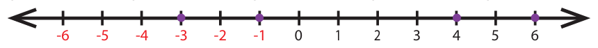
4) 1) minus 3, 2 ) minus 2,
5) 1) minus 44, 2) plus 19 or 19, 3) 0, 4) 312 5) minus 789
6) 1) minus 15 kilo meter,
7) 1) Wrong, Integers are not continuously marked
2) Correct, Integers are correctly marked.
3) Wrong, Integer minus 2 is marked wrongly.
4) Correct, Integers are marked at equal distance.
5) Wrong, negative integers marked wrongly
8) 1) 8, 9, 2) minus 4, minus 3, minus 2, minus 1, zero, 1, 2, 3, 3) minus 2, minus 1, zero, 1, 2, 4) minus 4, minus 3, minus 2,
9) 1) minus 7 less than 8, 2) minus 8 less than minus 7, 3) minus nine hundred and ninty nine, greater than, minus thousand , 4) minus hundred and eleven is equal to minus hundred and eleven , 5) zero, greater than minus two hundred,
10) 1) minus 20, minus 19, minus 17, minus 15, minus 13, minus 11, 12, 14, 16, 18,
2) minus 40, minus 28, minus 5, minus 1, zero, 4, 6, 8, 12, 22,
3) minus thousand , minus hundred, minus 10, minus 1, zero, 1, 10, hundred, thousand
11) 1) 27, 15, 14, 11, zero, minus 9, minus 14, minus 17,
2) four hundred , 78, 65, minus 46, minus 99, minus hundred and twenty , minus six hundred,
3) seven hundred and seventy seven, five hundred and fifty five, three hundred and thirty three, one hundred and eleven, minus two hundred and twenty two, minus, four hundred and forty four, minus, six hundred and sixty six, minus eight hundred and eight eight,
12) c) 7, 13) a) 20, 14) d) minus 6, 15) c) minus 2 , 16) b) zero,
Exercise 2.2
1) 1) a sapling planted at a depth of 3 meter,
2 ) a pit which is 3m deep
2)
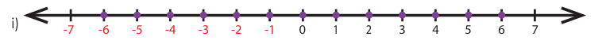
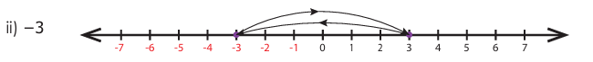
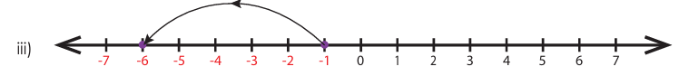
3,
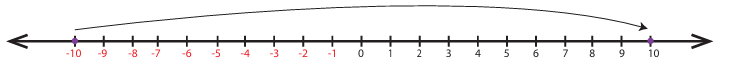
4,
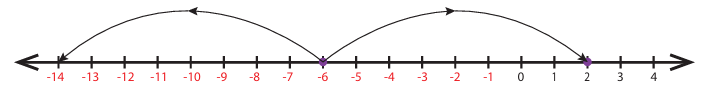
5) 1) K, open backet, minus 1, close bracket, 2) minus 4, 3) 6, open backet minus 2, minus 1, zero, 1, 2, 3 close bracket, 4) open backet C,H close bracket, open backet E, J close bracket, 5) False, zero,
6) minus 3, 7, 7) minus 4 , minus 1,
8) No, as the number line number extends on both sides without any end, we cannot find the smallest (minus) and the largest ( plus ) number
9) 1) minus 10 degree celsious, 2) minus 5 degree celsious, 3) minus 20 degree celsious, 4) minus 15 degree celsious,
10) S, less than Q, less than zero, less than R, less than, P,
11) 1) 3, 2) minus 2, 3) minus 6, 4) minus 1, v) minus 5, 6) minus 4, 7) 4, 8) 4, 9) 5 , 10) 2,
12) C1, zero, C3, 2, C5, zero, C6, minus 4, C8, minus 8, C9: zero,
13) 1) plus 45, 2) zero , 3) minus 10 and minus, 20 , 4) False 5) the same
Chapter 3 Perimeter and Area
Exercise 3.1
1) 1) 26 Centimetre, 40 Centimetre, Square , 2) 14 Centimetre, 182 Centimetre, Square, 3) 15 Centimetre, two hundred and twenty five, Centimetre, Squar , 4) 12 meter , 44 Centimetre, 5 ) 5 feet, 18 feet
2) 1) 24 Centimetre, , 36 Centimetre, Square, 2) 25 meter, six hundred and twenty five Centimetre, Square,
3) 7 feet, 28 feet,
3) 1) four hundred Centimetre, Square 2) 8 feet, 3) 4 meter,
4) 1) 13 meter 2) 6 meter, 3) 8 feet,
5) 1) five hundred, 2) two lakh sixty thousand, 3) eighty lakh,
6) 1) 48 Centi metre, , 80 Centi metre, Square , 2) 36 Centi metre, 33 Centi metre, Square, 3) hundred and fifty Centi metre, three hundred and eighty Centi metre, Square,
7) 20 meter, 24 meter Square,
8) 32 Centi metre, , 64 Centi metre, , Square,
9) 24 feet, 24 Squar feet,
10) 1) 25 meter, 2) 27 Centi metre, , 3) 18 Centi metre,
11) 41 Centi metre, hundred and twenty two, Centi metre,
12) 10 meter, hundred, meter Squar
13) 12 Centi metre,
14) two hundred and fifty meter square, Rupees eleven thousand two hundred and fifty.
15) 54 Centi metre,
16. b)
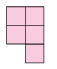
17) b) less than 60 Centimeter
18) c) 4 times
19) d) 3 times
20) c) Both the area and perimeter are changed
Exercise 3.2
1) 1) 9 Centi meter 2) 12 Centi meter 2) 114 Centi meter,
3) Rahim, 120 meter
4) 57 meter, two thousand four hundred and fifty one meter square,
5) Rupees four hundred.
6) 60 Centi meter
7) 8
8) 8 Centi meter , 24 Centi meter
9. 12, open bracket 1,23 close bracket, open bracket 2,22 close bracket, open bracket 3,21 close bracket, open bracket 4,20 close bracket, open bracket 5,19 close bracket, open bracket 6,18 close bracket , open bracket 7,17 close bracket , open bracket 8,16 close bracket , open bracket 9,15 close bracket , open bracket 10,14 close bracket , open bracket 11,13 close bracket , open bracket 12,12 close bracket
10) Perimeter of square B is twice that of square A ,
11) Area of the new square is reduced to 1/16 times to that of original area
12) Square plot by 4 meter square,
13) 102 Centi meter Square
14) 15 point 5 square units
Chapter 4 Symmetry
Exercise 4.1
1) 1) P, 2) Two, 3) Two , 4) Two, 5) Translation
2) 1) False, 2) True, 3) False, 4) True, 5) False,
3) 1) d, 2) a, 3) b, 4) c
4)
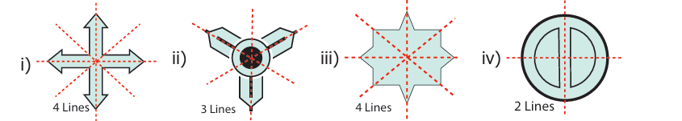
5) 1) DECODE, 2) KICK, 3) BED, 4) W A Y, 5) M A T H, 6) T O M A T O
6)
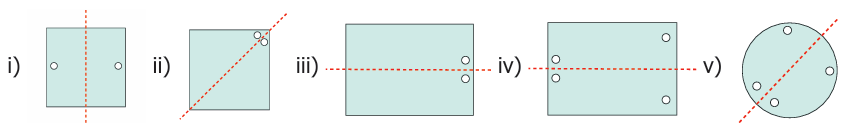
7)
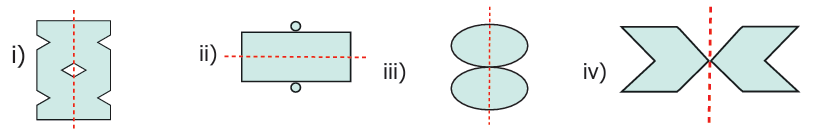
8) 1) 2 , 2) 2, 3) 4, 4) 8, 5) 2,
9) 1) 4, 2) 2, 3) 2, 4) 4, 5) 4, 6) 2
10)
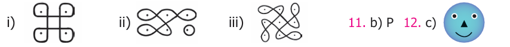
11) b, p
13) c) MAM
14) b) 2
15) a) 5
Exercise 4.2
1) 1) Scalene triangle, 2) Isosceles triangle 3) Equilateral triangle
2) 1) P, N, S, Z, 2) I, O, N, X, S, H, Z, 3) A, M, E, D, I, K, O, X, H, U, V, W, 4 ) I, O, X, H
3) 1) 0, 2 ,2) 1, 0 , 3) 2, 2 , 4) 8, 8 , 5) 1, 0
4) hundred and eighty one , one hundred and eleven, eight hundred and eight, eight hundred and eighteen, eight hundred and eighty eight,
5)
![image, 1) The given image, has two dots , with fishes facing each Other, on both sides of the sand clock, which is repeated again five times as pattern. 2) The given image, has green colour rectangle ,where a Purple diamond, is placed inside the rectangle ,with a Small Orange colour, Circle ring, inside the rectangle, with a small orange colour cir cular ring , inside a diamond. which is repeated again six times, as pattern, 3) The given image is a green Colour diamond,and other image is a orange colour, diamond, which is repeated for three times as pattern,](images/image311.png)
6,
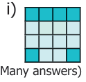
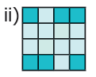
7)
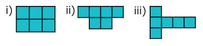
8,
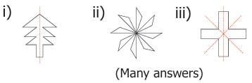
Many answers
3)
9) 9. 1) 10 2) 10 3) n, n
10) 1
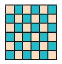
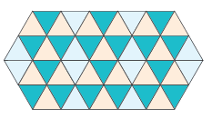
Chapter 5 Information Processing
Exercise 5.1
1) 1) 1,2, 3, 4, 3,2, 1 1,2,3,4,5,4,3,2,1,
2) hundred and forty four , 60, 84, 36, forty eight, 15, 27
2) 1) sixty five, seventy one, seventy eight,
2) 45, 37, 29,
3) hundred and sixty, three hundred and twenty, six hundred and forty,
4) fifty four thousand three hundred and twenty one, divided by sixty six thousand six hundred and sixty six, six lakh, fifty four thousand, three hundred and twenty one, divided by ,seven lakh seventy seven thounsand, seven hundred and seventy seven, seventy six lakh fifty four thousand three hundred and twenty one, divided by eighty eight lakh eighty eight thousand eight hundred and eighty eight,
3) 2) 12, 13 minus 1 1s equal to 12, 3) 33, 34 minus 1 is equal to 33, 4 ) 1 plus 3 plus 8 plus 21 plus 55 is equal to 88, 89 minus 1 is equal to 88
4,
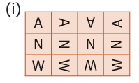
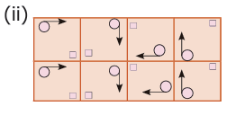
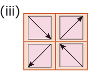
5) 1 ) 5, 2 ) 12 , 3 ) 1
6) 4
9,
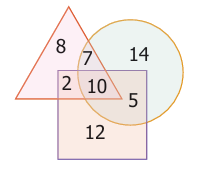
11) c) 27
12) a) B
13) d) 3
14) a) 199
15) b) 2
Exercise 5.2
1) 2
2) 1) 9, 11, 13, 15, 17, 19, 23, 25, 27, 29, 31, 33, 37, 39, 41, 43, 45, 47 ,
2 ) 29, 31, 37,
3) 1,4, 9, 16, 25, 36, 49
3) 3, 18, 7,
2) 3, 11, 32, 11, 40,
3) M, N, O, P, Q,
4) 1,4
4) A minus 8,
B, minus 1,
C minus 6,
D minus 2,
E minus 5,
F minus 7,
G minus 4,
H minus 9,
I minus 3
5) GOOD MORNING
6) 4
7) HOW ARE YOU?
8) FAMILY
10) 1) 3, 9, 18 2) 30
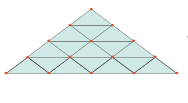
11) 7
13) six hundred and four, is common for all postal index numbers. Compare the remaining 3 digits, three hundred and three, four hundred and seventy, five hundred and five, five hundred and six, (two), five hundred and nine, five hundred and ten, five hundred and fifteen, five hundred and sixteen, (four), five hundred and twenty, five hundred and sixty, (Two)
Algorithm, vali murai, padi murai
Approximate, thoraayamaaka,
Area, parappalavu,
Ascending order, earuvarisai.
Asymmetrical, samassiirtra,
Axis of symmetry, samassiir accu,
Base, adippaakam,
Boundary, allai,
Breadth, agalam,
Closed figure,moodiya uruvam,
Combined shapes, kuuttu vadivangkaL,
Consecutive, aduththaduththa,
Descending order, irangku varisai,
Directed number, thisai en,
Distance, tholaivu,
Equilateral triangle,samapakka mukkooNam
Equivalent fraction, saana pinnam,
Estimated value, uththeesa mathippu,
Fraction, pinnam,
Fraction bars, pinna pattaikaL,
Golden ratio , thanga vikitham,
Half squares , aria sathurangaL,
Height, uyaram
Horizontal line, kidaimattak koodu,
Improper fraction, thakaa pinnam,
Inner boundary, utpura ellai,
Instruction, arivuruththuthal,
Integers, mulukkaL,
Inverse, ethirmarai nermaru
Irregular shapes, olungkatra vadivangkal,
Iterative pattern, thodar valar amaippu,
Iterative process , thodar valar seyal murai
Largest, mikapperiya
Length, niilam,
Like fraction, oorina pinnam,
Line of symmetry, samassiir koodu,
Measure, alavai,
Mixed fraction , kalappu pinnm,
Natural number iyal enn,
Negative integers, kurai mulukkal,
Negative number , kurai enn,
Non negative integers kuraiyarra mulukkal,
Number line, en koodu,
Opposite number, ethiren,
Outer boundary, velippura ellai,
Oval shape, neel vadivam,
Perimeter, sutralavu,
Positive integers, mikai mulukkal,
Positive number, mikai enn
Predecessor, munni,
Proper fraction, thaku pinnam,
Reciprocal , thalaikeli,
Rectangle, sevvakam,
Reflection, ethirolippu,
Reflection symmetry, ethrolippu samasseir,
Regular hexagon, olunku arukoonam
Regular pentagon, olungku ingookam,
Regular shapes, olunku vadivam,
Reshape, uru maatram,
Resize, alvu maatram,
Rhombus, saai sathuram,
Right angled triangle, senkoonam mukkoonam,
Rotation, sularci,
Rotational symmetry, sulal samasciir,
Sequence, thodar varisai,
Side, pakkam,
Signed number, kuriyiittuen,
Slant, saayvaaka,
Smallest, mikacciriya,
Sorting, vakaipaduththuthal, miraipaduththuthal
Square , sathuram,
Square units, sathura alakukal,
Successor, thodari,
Surface, maer pakuthi, thalam,
Symmetry , samacciir,
Translation, idappeyarvu,
Translational symmetry, idappeyarvu, samacciir,
Triangle, mukkoonam,
Unit fraction, ooralaku pinnam,
Unit square, ooralaku sathuram,
Unlike fraction, veetrina pinnam,
Vertical line, kuththukkoodu,
Whole number, muluen,
VI MATHEMATICS TERM III
TEXT BOOK DEVELOPMENT TEAM
Reviewer
Prof. R. Ramanujam
IMSC, Chennai
Academic Coordinator
B. Tamilselvi Deputy Director, SCERT, Chennai
Group In charge
Dr. V. Ramaprabha Senior Lecturer, DIET, Thiruvallur.
Text Book Co ordinator
V. Ilayarani Mohan
Assistant Professor, SCERT, Chennai
Content Writers
D. Iyappan
Lecturer, DIET, Vellore
S. K. Saravanan
Lecturer, DIET, Krishnagiri
M. Sellamuthu
P.G. Assistant, GHSS, Lakshmipuram, Tiruvallur
G. Kamalanathan
B T Assistant, GHSS, Arpakkam, Kancheepuram
K. Gunasekar
B T Assistant, PUMS, Valavanur west, Villupuram
G. Palani
B T Assistant, GHS, Jagadab, Krishnagiri
V. S. Mariamanonmani
B T Assistant, GGHS, Devikapuram, Thiruvannamalai.
Content Readers
Dr. M.P. Jeyaraman Assistant Professor, L.N. Govt. Arts College, Ponneri
Dr. K. Kavitha Assistant Professor, Bharathi Women's College, Chennai
Art and Design Team Illustration
K. Dhanas Deepak Rajan
K. Nalan Nancy Rajan
M. Charles
Layout Artist C. Jerald Wilson
R. Mathan Raj
C. Prasanth
P. Arun Kamaraj
M. Yesu Rathinam
A. Adison Raj
In House
Manohar Radhakirishnan Rajesh Thangappan
Wrapper Design
Kathir Arumugam
Typist L. Suganthini, SCERT Chennai
Co ordinator Ramesh Munisamy
ICT Co ordinator
Vasuraj D
B T Assistant (Retired,)
EMIS Technology Team
R.M. Satheesh
State Coordinator Technical,
TN EMIS, Samagra Shiksha.
K.P. Sathya Narayana
IT Consultant, TN EMIS, Samagra Shikaha
R. Arun Maruthi Selvan
Technical Project Consultant,
TN EMIS, Samagra Shiksha
This book has been printed on 80 G.S.M. Elegant Maplitho paper. Printed by offset at.